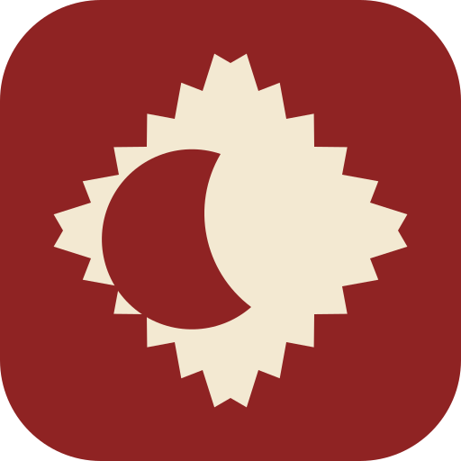

الرئيسية
وردك اليوم
ما تعلّمه من السنن اليوم يُحسب هنا، ويبدأ العدّ من جديد كل فجر.
الأقسام
آية اليوم
على الأبواب
المصحف
114 سورة و6236 آية محفوظة في جهازك
تابع القراءة
…
صلاتي
علّم كل صلاة كيف صلّيتها، ويحفظ لك التطبيق الشهر كله
اليوم
آخر ثلاثين يوماً
جماعة في الوقت قضاء فاتت
البحث
في القرآن أو الأذكار أو الأحاديث أو الأدعية أو السنن، بالتشكيل أو بدونه
المحفوظات
الآيات التي علّمتها للرجوع إليها
خطة الختمة
وزّع صفحات المصحف على الأيام وتابع أين وصلت
الأذكار
من حصن المسلم، مع عدّاد يحفظ ما قرأت اليوم
الأذكار اليومية
حصن المسلم كاملاً
السنن اليومية
على ترتيب كتاب المنح العلية في بيان السنن اليومية، من الاستيقاظ إلى النوم ثم ما لا يتقيد بوقت، فعلّم ما أدّيته اليوم
آخر 30 يوماً
المزيد
أدوات ومحتوى إضافي
جدول الشهر
مواقيت كل يوم في شهر واحد أمامك
المساجد القريبة
أقرب المساجد إلى موقعك، وطريقك إليها
أقربها إليك
القضاء
ما عليك من صلاة وصيام، وما قضيته منه
الصلوات
تُحسب من الصلوات التي علّمتها فائتة في صلاتي، وكلما قضيت واحدة فاضغط قضيتها
صيام رمضان
اضبط كم يوماً عليك، ثم علّم كل يوم تصومه
صفة العمرة
من الميقات إلى التحلل، مرحلة مرحلة، ومعك أين وصلت
خطوات العمرة
علّم كل خطوة إذا أدّيتها، ويحفظ لك التطبيق موضعك حتى تُتمّها
القبلة
اتجاه الكعبة من موقعك بحساب دائرة عظمى
---°
المسبحة
كل ضغطة على الدائرة تسبيحة، ويُحفظ لك مجموع اليوم
الإذاعة
بث مباشر، يحتاج اتصالاً بالإنترنت
مؤقت الإيقاف
من الأربعين النووية
عشرون حديثاً جامعاً لأصول الدين
الأدعية
أدعية من الكتاب والسنة، ومواضع الدعاء في القرآن
بالمواضيع
اختر موضوعاً لتقرأ أدعيته، وآيات الدعاء فيه تُقرأ من المصحف
أدعية المواضع
دعاء كل موضع في وقته، بعدّاد يحفظ ما قرأت اليوم
الرقية الشرعية
آيات وأدعية ثابتة للرقية
التقويم الهجري
الشهر كاملاً ومواسم العبادة فيه
مواسم الشهر
…
تحويل التاريخ
قادم
الإعدادات
اضبط الحساب والمظهر ونسخة بياناتك
الموقع والحساب
لم يحدد بعد
للمدن التي لا يغيب فيها الشفق
القراءة والمظهر
إِنَّ مَعَ ٱلْعُسْرِ يُسْرًا
نصّاً متّصلاً، أو خمسة عشر سطراً كما طُبعت في مصحف المدينة
متّصلة بلا وقفة، أو مع تعليم كل آية
اثنتا عشرة بصباح ومساء، أو أربع وعشرون
التلاوة المحفوظة
بياناتك
ما تسجّله محفوظ في جهازك وحده، ولا يخرج منه إلا ما تطلبه: تلاوة، أو تفسير، أو مساجد قريبة.
العمل بلا إنترنت
…
إذا رأيت التطبيق لا يتحدّث، أو ظهر لك شيء قديم، فاضغط هذا الزر، فهو يحذف نسخة التطبيق المحفوظة في جهازك وينزّل أحدث نسخة من الموقع، وتبقى بياناتك وأذكارك وعلاماتك كما هي.
التذكيرات
ما ينبّهك، ومتى، وبأي صوت
الصلاة
إشعار عند دخول الوقت
من التطبيق نفسه في وقت كل صلاة لموقعك، ويرنّ والتطبيق مغلق
يُسمع عند دخول الوقت، وللفجر أذانه
تُعرض عند تعليم الصلاة أنك أدّيتها
الأذكار والنوم
تذكيرات تفعّلها كما تشاء، ولكلٍّ صوتها: صوت الجهاز، أو نغمة هادئة، أو صامت.
بعد الفجر بنصف ساعة
بعد العصر بنصف ساعة
تصلك عنده تذكيرات ما قبل النوم التي تفعّلها تحت
أستغفر الله الذي لا إله إلا هو الحي القيوم وأتوب إليه
كان النبي ﷺ لا ينام حتى يقرأها
لن يزال عليك من الله حافظ ولا يقربك شيطان حتى تصبح
السنن والمواسم
تذكير بعد مغرب الخميس بالإكثار من الصلاة على النبي ﷺ
تنبيه في ليلة اليوم الذي يُستحب صيامه، قبل السحور
تنبيه قبل صلاة الجمعة بقراءة الكهف والصلاة على النبي ﷺ
ركعتان فأكثر بعد ارتفاع الشمس إلى قُبيل الزوال
تنبيه عند دخول الثلث الأخير من الليل
تذكير كل فترة تختارها
صوت قارئ يتلو الصلاة على النبي ﷺ، ويُسمع ما دام التطبيق مفتوحاً
اختر ما يُتلى، وتحته نصّه ومصدره
اختر صوتاً واضغط زر السماع صوت الهاتف
وردك
تنبيه بورد ختمتك في الساعة التي تختارها
تصلك التنبيهات ما دام التطبيق مفتوحاً أو في الخلفية، وتصل على أوسع نطاق حين يُثبَّت التطبيق على الجهاز.
عن سُنّتي
ما الذي يعمل هنا، وكيف

سُنّتي يعمل كاملاً على جهازك، فالمصحف كله محفوظ معك وأوقات الصلاة تُحسب فلكياً على الجهاز نفسه دون طلب من أي خادم، ثم تبقى الأذكار والقبلة وتتبع السنن متاحة ولو انقطع الإنترنت.
ما الذي يحتاج إنترنت
تلاوة القارئ والإذاعة والتفسير وحدها تحتاج اتصالاً، وما عدا ذلك يعمل بلا شبكة.
المصادر
نص المصحف برواية حفص عن عاصم بالرسم العثماني، والأذكار من حصن المسلم، والأحاديث من الأربعين النووية، ثم التلاوات من شبكة القرآن المفتوحة، وخريطة المساجد وبياناتها من OpenStreetMap.
التواصل
للاستفسار أو الملاحظات: Site@hotmail.com
صدقة جارية
التطبيق مجاني بلا إعلانات ولا تتبع، فمن انتفع به فليدع لوالديّ ولمن ساهم فيه.
سياسة الخصوصية
علي العنزي · 3li.info